Lab6 TLP_data_driven_2
Unique_task_regions
This example shows how to call a dataflow function that contains a task region. Recall that a hls: task should not be treated as a function call - instead a hls::task needs to be thought of as a persistent instance statically bound to channels. Due to this, it will be your responsibility to ensure that multiple invocations to any function that contains hls::tasks are uniquified or these calls will use the same hls::tasks and channels.
This example shows how you can use the function template instances to uniquify such dataflow functions that contain a hls::task region.
test.h
#include "hls_task.h"
void top(hls::stream<int>& in1, hls::stream<int>& out1, hls::stream<int>& in2,
hls::stream<int>& out2, hls::stream<int>& in3, hls::stream<int>& out3,
hls::stream<int>& in4, hls::stream<int>& out4);
test.cpp
#include "test.h"
void copy(hls::stream<int>& in, hls::stream<int>& out) {
#pragma HLS INTERFACE ap_ctrl_none port=return
#pragma HLS INTERFACE mode=AXIS port=in register_mode=off
#pragma HLS INTERFACE mode=AXIS port=out register_mode=off
#pragma HLS PIPELINE style=flp II=1
for (int i = 0; i < 8; i++)
out.write(in.read());
}
//Copies 8 elements from one stream to another, demonstrating basic stream usage.
void func(hls::stream<int>& in, hls::stream<int>& out) {
#pragma HLS INTERFACE ap_ctrl_none port=return
#pragma HLS INTERFACE mode=AXIS port=in register_mode=off
#pragma HLS INTERFACE mode=AXIS port=out register_mode=off
int cnt = 0;
// This loop is only needed for the persistent variable above
while (1) {
#pragma HLS pipeline off
int t = in.read();
out.write(t + cnt++);
}
}
//Represents a persistent task with an internal counter (cnt).
//Reads from its input stream, increments and adds cnt to the value, and writes to its output stream.
//#pragma HLS pipeline off disables hardware pipelining within this task.
template <typename>
void mid(hls::stream<int>& in1, hls::stream<int>& out1, hls::stream<int>& in2,
hls::stream<int>& out2) {
#pragma HLS INTERFACE mode=AXIS port=in1 register_mode=off
#pragma HLS INTERFACE mode=AXIS port=out1 register_mode=off
#pragma HLS INTERFACE mode=AXIS port=in2 register_mode=off
#pragma HLS INTERFACE mode=AXIS port=out2 register_mode=off
#pragma HLS dataflow
HLS_TASK_STREAM<int> in1_t, out1_t, in2_t, out2_t;//HLS_TASK_STREAM hls_thread_local hls::stream
copy(in1, in1_t);
copy(in2, in2_t);
HLS_TASK t1(func, in1_t, out1_t);// HLS_TASK hls_thread_local hls::task
HLS_TASK t2(func, in2_t, out2_t);
copy(out1_t, out1);
copy(out2_t, out2);
}
//Encapsulates a dataflow region with two tasks (t1, t2), each running func.
//Uses task streams for direct task communication.
//Copies data between external streams and task streams for input/output.
//We can see that the ```copy()``` function contains loop and the ```func()``` function contains ```while(1)```.
//The dataflow region contain two parts, one is the ```copy()``` and the other is the ```func()```. The task should be data_drivn, so the ```func()``` contains ```while(1)```
void middle(hls::stream<int>& in1, hls::stream<int>& out1,
hls::stream<int>& in2, hls::stream<int>& out2,
hls::stream<int>& in3, hls::stream<int>& out3,
hls::stream<int>& in4, hls::stream<int>& out4) {
/* Top level dataflow region that calls a task region uniquely Top-levelate
* instantiation */
#pragma HLS INTERFACE mode=AXIS port=in1 register_mode=off
#pragma HLS INTERFACE mode=AXIS port=out1 register_mode=off
#pragma HLS INTERFACE mode=AXIS port=in2 register_mode=off
#pragma HLS INTERFACE mode=AXIS port=out2 register_mode=off
#pragma HLS INTERFACE mode=AXIS port=in3 register_mode=off
#pragma HLS INTERFACE mode=AXIS port=out3 register_mode=off
#pragma HLS INTERFACE mode=AXIS port=in4 register_mode=off
#pragma HLS INTERFACE mode=AXIS port=out4 register_mode=off
#pragma HLS dataflow
mid<class c1>(in1, out1, in2, out2);
mid<class c2>(in3, out3, in4, out4);
}
//Top-level dataflow region.
//Instantiates two unique mid templates (c1, c2) for independent task execution.
/* ************************************************************************ */
/* ************* TOP LEVEL FUNCTION *************************************** */
/* ************************************************************************ */
void top(hls::stream<int>& in1, hls::stream<int>& out1, hls::stream<int>& in2,
hls::stream<int>& out2, hls::stream<int>& in3, hls::stream<int>& out3,
hls::stream<int>& in4, hls::stream<int>& out4) {
#pragma HLS INTERFACE ap_ctrl_none port=return
#pragma HLS INTERFACE mode=AXIS port=in1 register_mode=off
#pragma HLS INTERFACE mode=AXIS port=out1 register_mode=off
#pragma HLS INTERFACE mode=AXIS port=in2 register_mode=off
#pragma HLS INTERFACE mode=AXIS port=out2 register_mode=off
#pragma HLS INTERFACE mode=AXIS port=in3 register_mode=off
#pragma HLS INTERFACE mode=AXIS port=out3 register_mode=off
#pragma HLS INTERFACE mode=AXIS port=in4 register_mode=off
#pragma HLS INTERFACE mode=AXIS port=out4 register_mode=off
/* two calls to the lower level dataflow region */
middle(in1, out1, in2, out2, in3, out3, in4, out4);
middle(in1, out1, in2, out2, in3, out3, in4, out4);
}
//Calls middle twice, demonstrating multiple calls to the dataflow region.
The dataflow view is shown below.
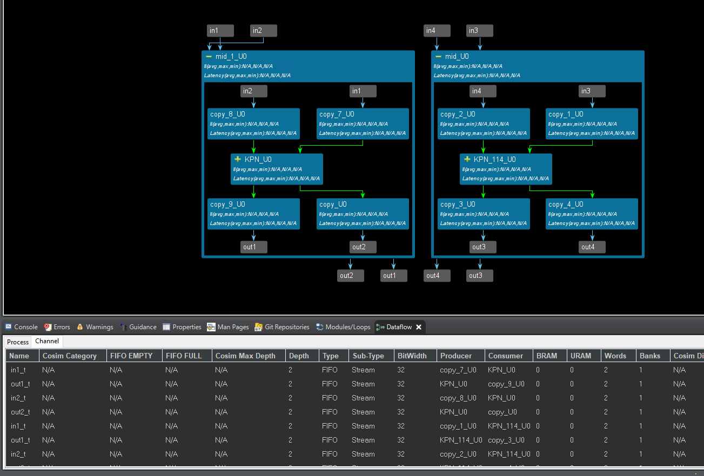
The timeline trace is shown below.
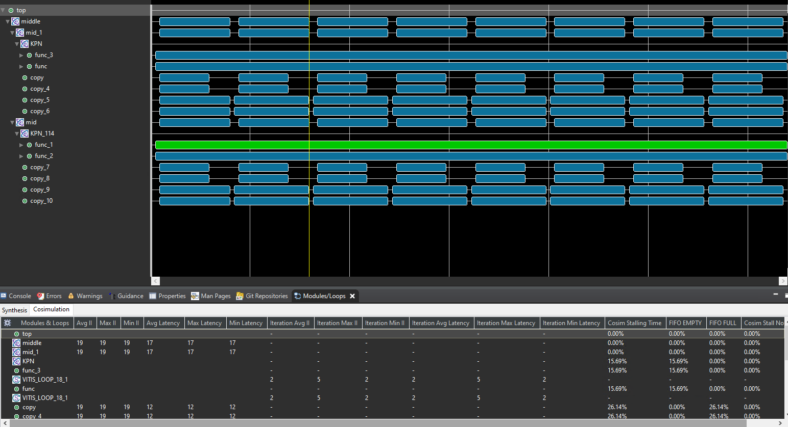
-
Templates enable unique task instances with distinct channel bindings for flexibility and reusability. We can see that two
middle()instances are independent. -
Tasks vs. Function Calls: Tasks aren’t traditional function calls; they’re persistent entities with state and static channel bindings.
-
Dataflow Execution: Tasks execute independently based on data availability, not sequential order.
The result of the optimization is shown below.
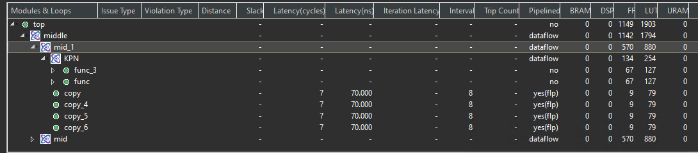
test_tb.cpp
#include "test.h"
int main() {
hls::stream<int> in1, in2, in3, in4;
hls::stream<int> out1, out2, out3, out4;
for (int i = 0; i < 64; i++) {
in1.write(i);
in2.write(i);
in3.write(i);
in4.write(i);
}
for (int j = 0; j < 4; j++) {
top(in1, out1, in2, out2, in3, out3, in4, out4);
}
for (int i = 0; i < 64; i++) {
int t = out1.read();
if (t != 2 * i) {
printf("Error 1 at %d %d != %d\n", i, t, 2 * i);
return 1;
}
t = out2.read();
if (t != 2 * i) {
printf("Error 2 at %d %d != %d\n", i, t, 2 * i);
return 1;
}
t = out3.read();
if (t != 2 * i) {
printf("Error 3 at %d %d != %d\n", i, t, 2 * i);
return 1;
}
t = out4.read();
if (t != 2 * i) {
printf("Error 4 at %d %d != %d\n", i, t, 2 * i);
return 1;
}
}
printf("PASS\n");
}
And export the IP core based on the above operations. We also need middle_data IP to provide the last and keep the signal. Ref
Create the Vivado project
The configure block design can use reference materials here. And we need to choose the number of the DMA according to the number of the interface.
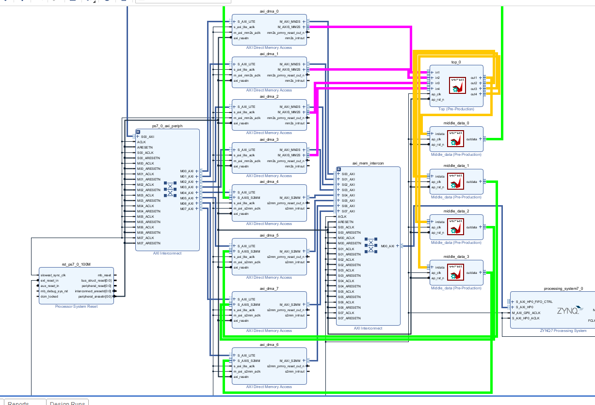
Run synthesis, Implementation, and generate bitstream
It may show some errors about I/O Ports, please fix them.
Download the bitstream file to PYNQ
The first step is to allocate the buffer. pynq allocate will be used to allocate the buffer, and NumPy will be used to specify the type of the buffer.
from pynq import Overlay
from pynq import allocate
import numpy as np
import time
Create DMA instances
We can create three DMA objects using the labels for the DMAs listed above.
hw = Overlay('design_1.bit')
mm2s_0 = hw.axi_dma_0.sendchannel
mm2s_1 = hw.axi_dma_1.sendchannel
mm2s_2 = hw.axi_dma_2.sendchannel
mm2s_3 = hw.axi_dma_3.sendchannel
s2mm_0 = hw.axi_dma_4.recvchannel
s2mm_1 = hw.axi_dma_5.recvchannel
s2mm_2 = hw.axi_dma_6.recvchannel
s2mm_3 = hw.axi_dma_7.recvchannel
Read DMA
The first step is to allocate the buffer. pynq.allocate will be used to allocate the buffer, and NumPy will be used to specify the type of the buffer.
N = 64
iBuf_0 = allocate(shape=(N,), dtype = np.int32)
iBuf_1 = allocate(shape=(N,), dtype = np.int32)
iBuf_2 = allocate(shape=(N,), dtype = np.int32)
iBuf_3 = allocate(shape=(N,), dtype = np.int32)
oBuf_0 = allocate(shape=(N,), dtype = np.int32)
oBuf_1 = allocate(shape=(N,), dtype = np.int32)
oBuf_2 = allocate(shape=(N,), dtype = np.int32)
oBuf_3 = allocate(shape=(N,), dtype = np.int32)
for i in range(N):
oBuf_0[i]= i
oBuf_1[i]= i
oBuf_2[i]= i
oBuf_3[i]= i
mm2s_0.transfer(oBuf_0)
mm2s_1.transfer(oBuf_1)
mm2s_2.transfer(oBuf_2)
mm2s_3.transfer(oBuf_3)
s2mm_0.transfer(iBuf_0)
s2mm_1.transfer(iBuf_1)
s2mm_2.transfer(iBuf_2)
s2mm_3.transfer(iBuf_3)
mm2s_0.wait()
mm2s_1.wait()
mm2s_2.wait()
mm2s_3.wait()
s2mm_0.wait()
s2mm_1.wait()
s2mm_3.wait()
s2mm_2.wait()
We will see:
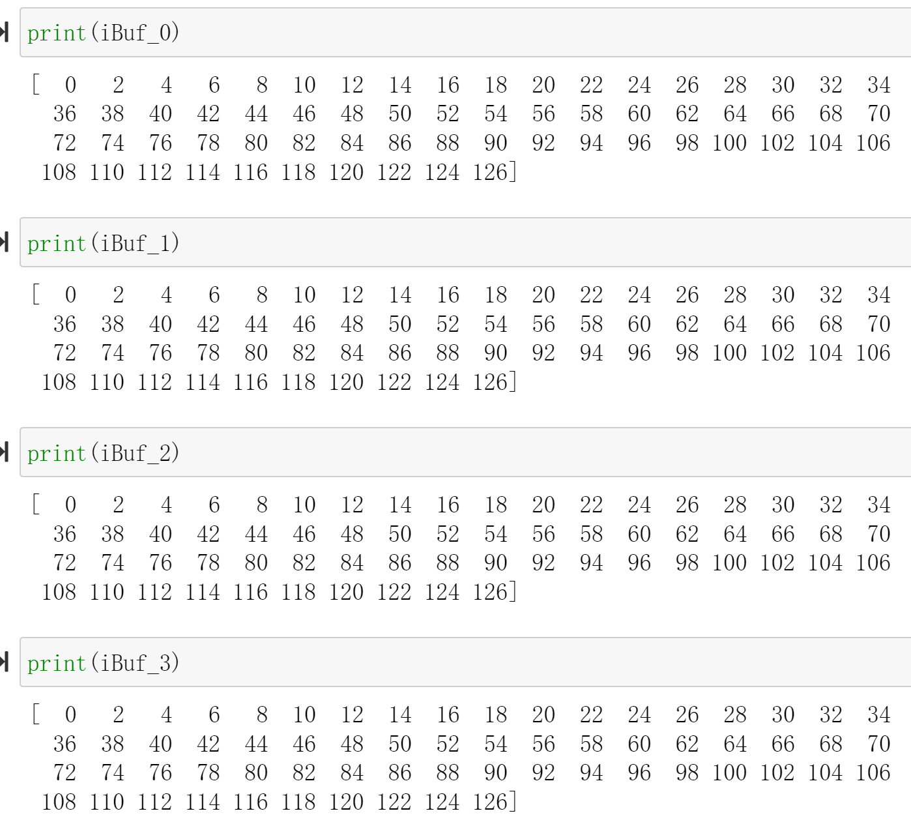
Unsynchronized_io_maxi
Data-driven TLP designs using hls::task run-continuously until reset. These modules support un-synchronized I/O that can change at any time, regardless of whether the module is executing or idle; this is different from control-driven TLP where the input only changes during the idle state. The module designer is not particular about the timing of the change as long as the module can see the updated data at some point in time. Non-stream data, such as scalar and array variables, must all be local to the task functions and cannot be passed as arguments, except as noted in Stable M_AXI and S_AXILITE Accesses below.
You can also pass scalar values (both local and top-level arguments) and pointers to array arguments in the top-level function, provided that they are marked with the STABLE pragma or directive. You must also be careful to ensure that either their value never changes during kernel execution (this is virtually impossible to ensure with hls::task instantiated alone at the top, without regular dataflow processes), or the kernel behavior does not depend on when these arguments change value. For example the process can tolerate a value change at an arbitrary point in time, or some other stream-based synchronization mechanism is used to regulate their access.
There are two types of un-synchronized I/O:
-
Scalars: where the host periodically checks the status of registers for value change
-
Memory I/O : where the module receives a
DRAMbuffer from the host code, and privately manages it
The stable pragma can be used to mark input or output variables of a dataflow region. Its effect is to remove their corresponding task-level synchronizations, assuming that the user guarantees this removal is indeed correct.
void dataflow_region(int A[...], ...
#pragma HLS stable variable=A
#pragma HLS dataflow
proc1(...);
proc2(A, ...);
Without the stable pragma, and assuming that A is read by proc2, then proc2 would be part of the initial synchronization for the dataflow region where it is located. This means that proc1 would not restart until proc2 is also ready to start again, which would prevent dataflow iterations from overlapping and induce a possible loss of performance. The stable pragma indicates that this synchronization is not necessary to preserve correctness.
With the stable pragma, the compiler assumes that:
-
If
Ais read byproc2, then the memory locations that are read are still accessible and can not be overwritten by any other process or calling context, while thedataflow_regionis being executed. -
If
Ais written byproc2, then the memory locations written can not be read, before their definition, by any other process or calling context, whiledataflow_regionis being executed.
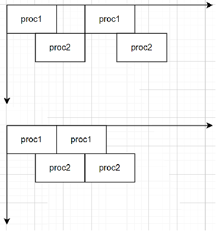
And we can have an example as shown below:
stable_test.h
#ifndef _STABLE_TEST_H
#define _STABLE_TEST_H
#define N 8
void dataflow_region(int A[N],int in1[N],int in2[N],int out1[N]);
#endif
stable_test.cpp
#include"stable_test.h"
void add(int a[N],int b[N],int sum[N])
{
for(int i=0;i<N;i++)
{
sum[i]=a[i]+b[i];
}
}
void dataflow_region(int A[N],int in1[N],int in2[N],int out1[N])
{
//#pragma HLS stable variable=A
#pragma HLS dataflow
int sum1[N];
add(in1,in2,sum1);
add(A,sum1,out1 );
}
stable_tb.cpp
#include "stable_test.h"
#include <stdio.h>
int main(){
int A[N];
int B[N];
int C[N];
int sum[N];
for(int i=0;i<N;i++)
{
A[i]=i;
B[i]=i;
C[i]=i;
}
dataflow_region(A,B,C,sum);
dataflow_region(A,B,C,sum);
for(int j=0;j<N;j++)
{
printf("sum[%d] is %d\r\n",j,sum[j]);
}
}
After run the Cosimulation,we can see that:
Without the stable pragma:
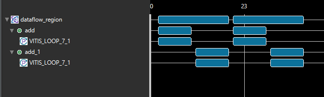
With the stable pragma:
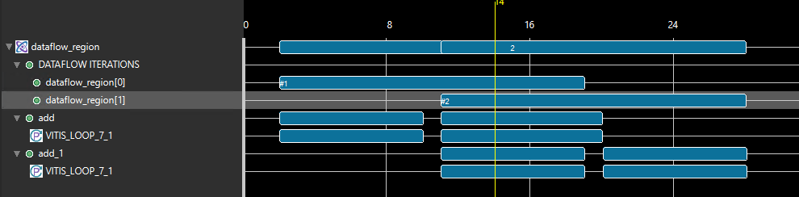
Stable top pointers with the m_axi protocol and an s_axilite offset must be enabled for C/RTL Co-simulation using the cosim.enable_tasks_with_m_axi command as described in Co-Simulation ConfigurationRef.
The following example shows an hls::task design with a stable m_axi pointer argument in the top-level function. Any access to the underlying DRAM buffer will be unsynchronized with the process of the function. Because the offset register for the m_axi interface automatically uses the ap_none protocol, the C++ and RTL will re-read its value only when the write_process is executed again.
dut. cpp
#include "ap_axi_sdata.h"
#include "ap_int.h"
#include "hls_stream.h"
#define HLS_TASK_ALLOW_NON_STREAM_ARGS
//It instructs the HLS tool to allow tasks to have non-stream arguments (e.g., scalar variables, pointers, or arrays) in addition to stream arguments.
//It's often used to enable more flexible task communication and data sharing.
#include "hls_print.h"
#include "hls_task.h"
void process_23(hls::stream<int>& in, hls::stream<int>& out) {
#pragma HLS INLINE off
static int state = 0;
static int val;
in.read(val);
val = val * 23;
out.write(val);
}
void process_11(hls::stream<int>& in, hls::stream<int>& out) {
#pragma HLS INLINE off
static int state = 0;
static int val;
in.read(val);
val = val * 11;
out.write(val);
}
void write_process(hls::stream<int>& in, hls::stream<int>& out, int* mem) {
int val;
static int addr = 0;
in.read(val);
if (addr >= 32)
addr = 0;
mem[addr] = val;
addr++;
val = mem[addr - 1];
out.write(val);
}
extern "C" {
void stable_pointer(int* mem, hls::stream<int>& in, hls::stream<int>& out) {
#pragma HLS INTERFACE mode = m_axi bundle = gmem depth = \
256 max_read_burst_length = 16 max_widen_bitwidth = \
512 max_write_burst_length = 16 num_read_outstanding = \
16 num_write_outstanding = 16 port = mem
#pragma HLS stable variable = mem
hls_thread_local hls::stream<int> int_fifo("int_fifo");
#pragma HLS STREAM depth = 512 type = fifo variable = int_fifo
hls_thread_local hls::stream<int> int_fifo2("int_fifo2");
#pragma HLS STREAM depth = 512 type = fifo variable = int_fifo2
hls_thread_local hls::task t1(process_23, in, int_fifo);
hls_thread_local hls::task t2(process_11, int_fifo, int_fifo2);
hls_thread_local hls::task t3(write_process, int_fifo2, out, mem);
}
} // extern "C"
dut_tb.cpp
#include "ap_axi_sdata.h"
#include "ap_int.h"
#include "hls_stream.h"
#include <unistd.h>
extern "C" void stable_pointer(int* mem, hls::stream<int>&, hls::stream<int>&);
int main(int argc, char* argv[]) {
int memory[512];
// memset(memory, 0, 128*256/8);
hls::stream<int> in, out;
int val;
for (int i = 0; i < 100; i++) {
in.write(i);
memory[i] = 0;
}
stable_pointer(memory, in, out);
for (int i = 0; i < 100; i++) {
out.read(val);
if (val != i * 23 * 11) {
printf("%d != %d\n", val, i * 23 * 11);
return 1;
}
}
return 0;
}
The dataflow view is shown below.
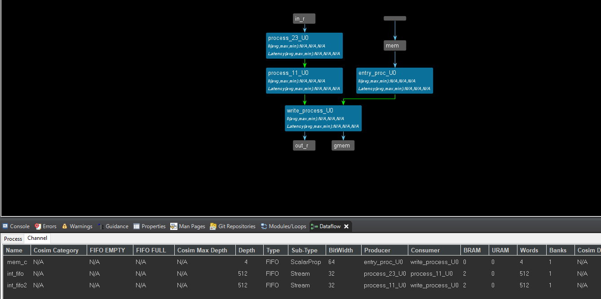
Unsynchronized_io_scalar
Scalar values are passed by reference:
void test(hls::stream<int> &in, hls::stream<int> &out, int &n)
The following is an example of an hls::task design with a stable by-reference scalar argument, whose behavior is by and large insensitive to the exact timing of a change of value of that argument:
test. h
#include "hls_task.h"
#define N 100
#include <iostream>
void test(hls::stream<int>& in, hls::stream<int>& out, int n);
test.cpp
#include "test.h"
void sub_task1(hls::stream<int>& in, hls::stream<int>& out) {
#pragma HLS INTERFACE ap_ctrl_none port=return
#pragma HLS INTERFACE mode=AXIS port=in register_mode=off
#pragma HLS INTERFACE mode=AXIS port=out register_mode=off
#pragma HLS PIPELINE style=flp II=1
int c = in.read();
out.write(c + 2);
}
void sub_task2(hls::stream<int>& in, hls::stream<int>& out) {
#pragma HLS INTERFACE ap_ctrl_none port=return
#pragma HLS INTERFACE mode=AXIS port=in register_mode=off
#pragma HLS INTERFACE mode=AXIS port=out register_mode=off
#pragma HLS PIPELINE style=flp II=1
int c = in.read();
out.write(c - 1);
}
void task2(hls::stream<int>& in, hls::stream<int>& out, int n) {
#pragma HLS INTERFACE ap_ctrl_none port=return
#pragma HLS INTERFACE mode=AXIS port=in register_mode=off
#pragma HLS INTERFACE mode=AXIS port=out register_mode=off
#pragma HLS INTERFACE mode=s_axilite port=n
#pragma HLS PIPELINE style=flp II=1
int c = in.read();
out.write(c + 2 + n);
}
void test(hls::stream<int>& in, hls::stream<int>& out, int n) {
#pragma HLS INTERFACE ap_ctrl_none port=return
#pragma HLS INTERFACE mode=AXIS port=in register_mode=off
#pragma HLS INTERFACE mode=AXIS port=out register_mode=off
#pragma HLS INTERFACE mode=s_axilite port=n
#pragma HLS STABLE variable = n
HLS_TASK_STREAM<int, N> s1;
HLS_TASK_STREAM<int, N> s2;
HLS_TASK t1(sub_task1, in, s1);
HLS_TASK t2(sub_task2, s1, s2);
HLS_TASK t(task2, s2, out, n);
}
pragma HLS stable : Arguments marked as stable cannot change during kernel execution. Inputs that only change when the kernel is not running, such as ports that provide configuration data, should be marked with a STABLE pragma or directive. The STABLE Pragma can only be used for Control-Driven task modeling because in Data-driven Task-level Parallelism there is no way to detect when the kernel is idle.
The STABLE pragma informs Vitis HLS of the following:
-
The data applied to the port remains stable during normal operation but is not a constant value that can be optimized.
-
The fanout from this port is not required to be registered.
Pragma STABLE pragma in DATAFLOW networks tells the compiler that input does not need to be read by the first dataflow process and that output does not need to be written by the last dataflow process in a network. This can dramatically improve II.
And the dataflow view is shown below:
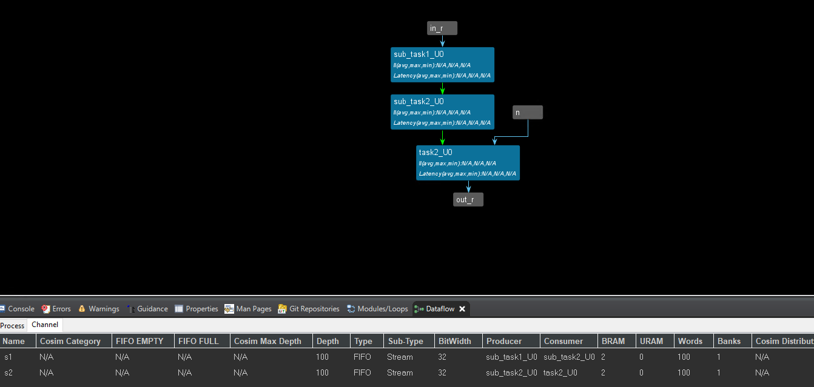
test_tb.cpp
#include "test.h"
int main() {
hls::stream<int> in;
hls::stream<int> out;
for (int i = 0; i < N; i++)
in.write(i);
test(in, out, N);
int sum = 0;
for (int i = 0; i < N; i++)
sum += out.read();
if (sum != 15250)
return 1;
return 0;
}
Before you add the middle_data IP, you need to change the num in the middle_data.h according to the different needs for the output data and run C synthesis and export the IP.
Create the Vivado project
The configure block design can use reference materials here
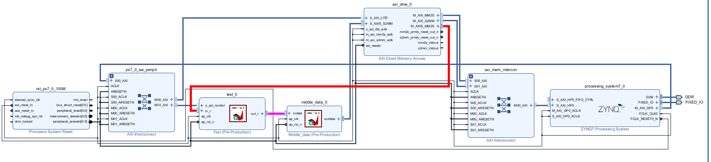
Run synthesis, Implementation and generate bitstream
It may shows some errors about I/O Ports, please fix them.
Download the bitstream file to PYNQ
The first step is to allocate the buffer. pynq allocate will be used to allocate the buffer, and NumPy will be used to specify the type of the buffer.
from pynq import Overlay
from pynq import allocate
import numpy as np
import time
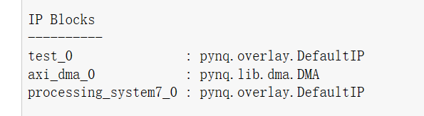
Create DMA instances
We can create three DMA objects using the labels for the DMAs listed above.
hw = Overlay('design_1.bit')
mm2s = hw.axi_dma_0.sendchannel
s2mm = hw.axi_dma_0.recvchannel
register_n=hw.test_0
Read DMA
The first step is to allocate the buffer. pynq allocate will be used to allocate the buffer, and NumPy will be used to specify the type of the buffer.
N = 100
iBuf = allocate(shape=(N,), dtype = np.int32)
oBuf = allocate(shape=(N,), dtype = np.int32)
for i in range(N):
oBuf[i]= i
register_n.register_map
register_n.register_map.n=100
For a single variable n, we assign its value by defining it as an s_axilite interface, as shown in the following diagram.
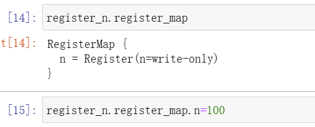
mm2s.transfer(oBuf)
s2mm.transfer(iBuf)
mm2s.wait()
s2mm.wait()
We will see:
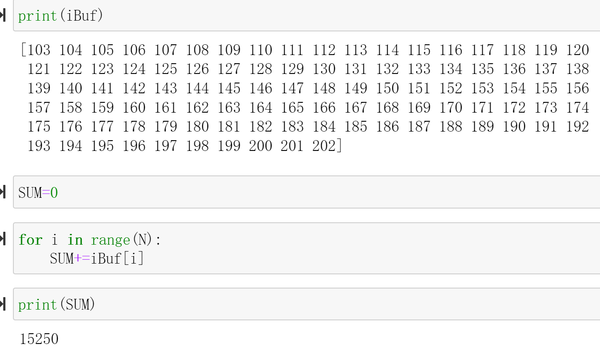
Demonstrate
Please finish one function that uses the hls::task object and implement it on the PYNQ-Z2 board.